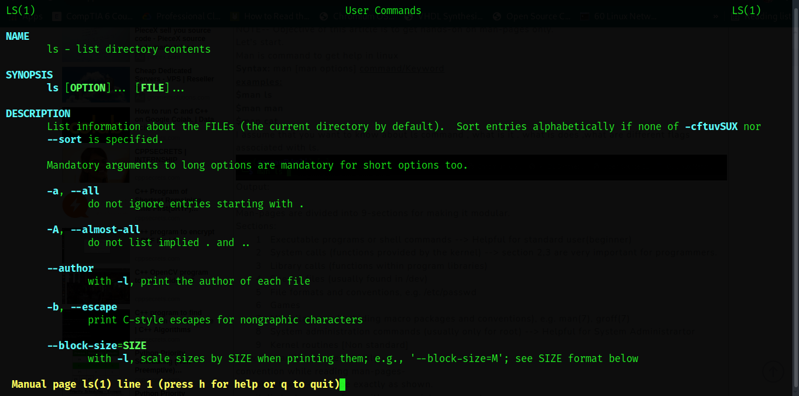
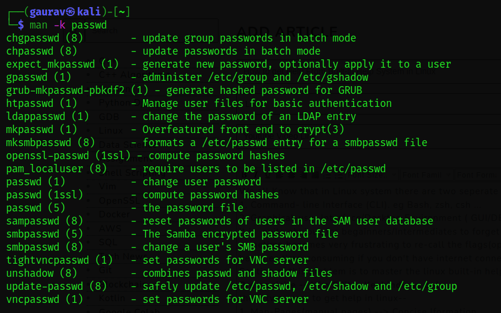
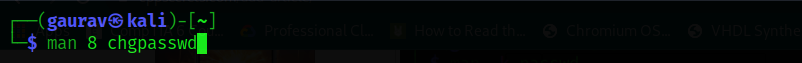
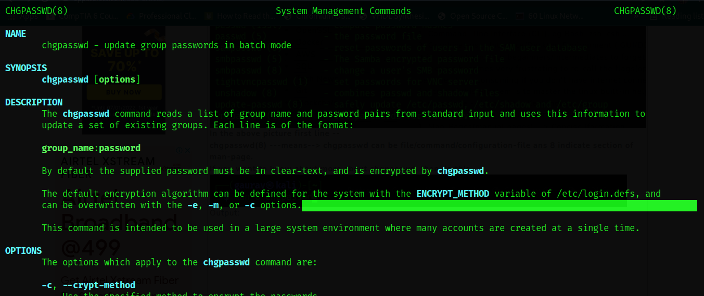
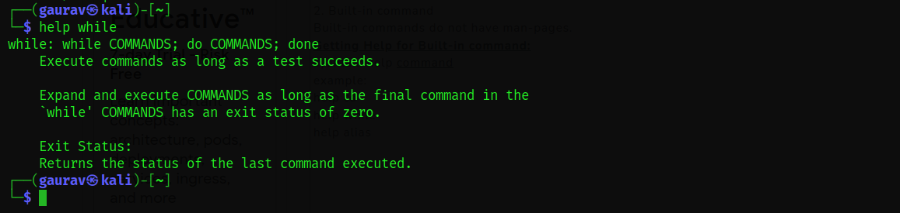
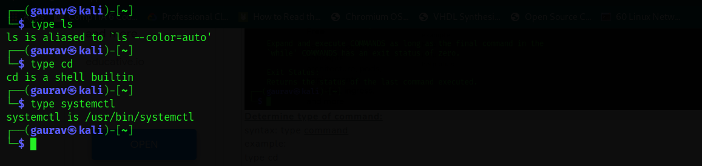

Blogs By Gaurav The Great
How to get Help From Built-in Help System in Linux
We all Know that in Linux system there are two seperate User-Interface.
1. Command- line Interface (CLI). eg Bash, zsh, csh ...
2. Graphical-user Interface/Desktop Environment ( GUI/DE) . e.g Gnome , KDE , xfce , lxde ...
Prerequisite -- Vim Editor Keybindings only.
It is quite obvious for begainners/Intermediates to forget command and it's important
flags(options). it sometime becomes very frustrating to re-call the flags(option) at time of
firing command on the terminal. It becomes time-consuming if you don't have internet connection
or hardcopy of documentation.
Soution of this problem is to master the linux built-in help system (man-pages).
there two ways to get help in linux:
1. Man-Pages(manual pages) --> Concise Iformation.
2. Info-pages(Information pages) --> comprehensive Information.
NOTE-- Objective of this article is to get hands-on on man-pages only.
Let's start.
Man is command to get help in linux
Syntax: man [man options] command/Keyword
examples:
$man ls
$man man
$man cat
I assume that you want to know about ls command , what is it . what is does ,what are different
flags associated with ls.
Output:

Man-pages are divided into 9-sections for making it modular.
Sections:
1 Executable programs or shell commands --> Helpful for standard user(beginner)
2 System calls (functions provided by the kernel) --> section 2,3 are very important for
programmers.
3 Library calls (functions within program libraries)
4 Special files (usually found in /dev)
5 File formats and conventions, e.g. /etc/passwd
6 Games
7 Miscellaneous (including macro packages and conventions), e.g. man(7), groff(7)
8 System administration commands (usually only for root) --> Helpful for System Administrartor
9 Kernel routines [Non standard]
How to read Man-pages quickly --
convention while reading man-pages-
bold text ----> type exactly as shown.
italic text ----> replace with appropriate argument.
[-abc] ----> any or all arguments within [ ] are optional.
-a|-b ----->options delimited by | cannot be used together.
argument ... ----> argument is repeatable.
[expression] ... ---> entire expression within [ ] is repeatable.
NOTE: conventions are very very Important. Alway try to remeber it.
Searching for man-pages--
Syntax : man -k keywod ...
Example:
man -k reboot
man -k ssh
If you want to know about how to update password or some deatail about user-account and group.

In the above picture first line --
chgpasswd(8) ---means--> chgpasswd can be file/command/configuration-file ans 8 indicate section
of man-page.
If you want to know about more about chgpasswd. then do this .

Output:

Man-pages Navigation-
j --->Farwar one line
k ---> Backward One line
ctrl+f ---> Farward One Window/page
ctrl+b ---> Backwawd one Window/page
g ---> Go to last line in the file (or line N)
G(shift+g) ---> Go to first line in the file (or line N)
Searching Within a man-pages-
/pattern ---> Search farward for matching line
?Pattern ---> Search Backward for matching line
n ---> repeat previous search
N(shift+n) ---> repeat previous search in reverse direction.
ESC-u ---> undo (toggel)search highlighting.
NOTE: type "h" for additional infromation while inside man and type "q" to quit.
\
Note: There are two type shell command
1. External command
2. Built-in command
Built-in commands do not have man-pages.
Getting Help for Built-in command:
syantax: help command
example:
help cd
help while
help alias

Determine type of command:
syntax: type command
example:
type cd
type ls
type systemctl

Thank You for Reading.